무선설비기사 (2011-09-25 기출문제)
1과목: 디지털 전자회로
1. 다음 그림은 콜피츠 발진회로를 변형한 클랩 발진회로이다. 안정한 주파수를 얻기 위해 C1, C2를 C3에 비해 매우 크게 하였을 때, 이 발진회로의 발진주파수는? (단, C3=0.001[μF], L=1[mH])
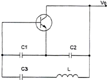
- 약 150[kHz]
- 약 153[kHz]
- 약 156[kHz]
- 약 159[kHz]
(정답률: 71%)

2. 그림과 같은 회로에 대한 설명 중 옳은 것은?
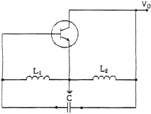
- 콜피츠 발진회로이다.
- VHF대나 UHF대에서 많이 사용된다.
- 부궤환을 적용하였다.
- 하틀리 발진회로이다.
(정답률: 92%)
3. 다음은 BJT 증폭기 회로를 나타내었다. 커패시터 CE를 사용한 목적으로 적절한 것은?
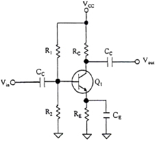
- 증폭기의 이득을 증가시킨다.
- 리플성분을 감소시킨다.
- 직류성분을 통과시킨다.
- 병렬궤환을 발생한다.
(정답률: 69%)
4. 다음 회로 중 결합상태가 직류로 구성된 멀티바이브레이터 회로는?
- 비안정 멀티바이브레이터
- 단안정 멀티바이브레이터
- 쌍안정 멀티바이브레이터
- 비쌍안정 멀티바이브레이터
(정답률: 73%)
5. 다음 회로는 무엇을 가리키는가?
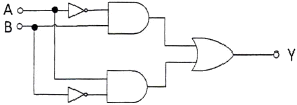
- 배타적 논리합 회로(Exclusive-OR)
- 감산기(Subtracter)
- 반가산기(Half adder)
- 전가산기(Full adder)
(정답률: 72%)
6. 다음 등가회로와 관련된 트랜지스터 증폭기 회로의 특징으로 틀린 것은?
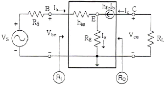
- 전압이득은 공통 이미터 증폭기 회로와 동일하다.
- 전류이득은 공통 이미터 증포기 회로와 동일하다.
- 입력저항 Ri가 매우 크다.
- 출력저항 Ro가 매우 크다.
(정답률: 51%)
7. 그림과 같은 다이오드 게이트의 출력값은?
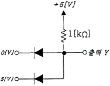
- 0[V]
- 5[V]
- 약 4.3[V]
- 10[V]
(정답률: 80%)
8. 8[MHz] 구형파를 카운터의 입력으로 인가할 때, 250[kHz]를 얻기 위해 필요한 카운터의 비트수는 얼마인가?
- 2비트
- 3비트
- 5비트
- 4비트
(정답률: 64%)
9. 다음 논리도는 무슨 회로인가?
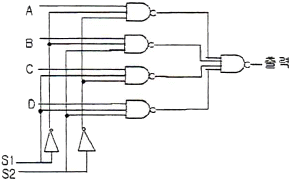
- 멀티플렉서(multiplexer)
- 디멀티플렉서(demultiplexer)
- 인코더(encoder)
- 디코더(decoder)
(정답률: 79%)
10. 다음은 궤환율이 0.04인 부궤환 증폭기 회로이다. 저항 Rf는?
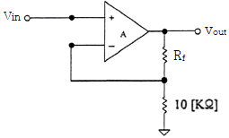
- 200[kΩ]
- 20[kΩ]
- 24[kΩ]
- 240[kΩ]
(정답률: 72%)
11. 교류입력에 대해 브리지 정류기의 다이오드 동작 조건에 대한 설명으로 적절한 것은?
- 한 개의 다이오드가 순방향 바이어스이다.
- 두 개의 다이오드가 순방향 바이어스이다.
- 모든 다이오드가 순방향 바이어스이다.
- 모든 다이오드가 역방향 바이어스이다.
(정답률: 91%)
12. 불 대수식
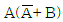
를 간단히 하면?- A
- B
- AB
- A+B
(정답률: 78%)
13. 다음 중 플립플롭과 관계가 없는 것은?
- Decoder
- RAM
- Register
- Counter
(정답률: 46%)
14. 이상적인 차동증폭기의 동상제거비(CMRR)는?
- 0
- 1
- -1
- ∞
(정답률: 75%)
15. 정류회로의 부하에 병렬로 연결한 용량성 평활회로에서 부하저항의 감소에 따른 리플 전압의 변화로 적절한 것은?
- 리플의 증가
- 리플의 감소
- 리플의 증가와 감소가 반복
- 변화가 없다.
(정답률: 68%)
16. 그림과 같은 클램핑 회로의 출력 파형은?
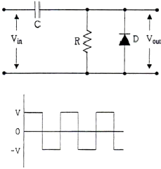
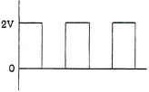
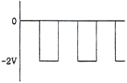
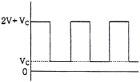
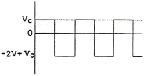
(정답률: 76%)
17. 다음 회로에서 맥동률을 개선하고자 한다. 가장 관련 있는 것은?
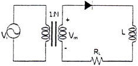
- RL
- N
- Vi
- Vm
(정답률: 75%)
18. 변조도 80[%]로 진폭변조한 피변조파에서 반송파의 전력 Pc와 상측파대 또는 하측파대의 전력 Ps와의 비율은?
- 1 : 0.8
- 1 : 0.55
- 1 : 0.33
- 1 : 0.16
(정답률: 73%)
19. 다음 중 보수 발생기가 필요한 회로는?
- 일치 회로
- 가산 회로
- 나눗셈 회로
- 곱셈 회로
(정답률: 68%)
20. DPSK 복조에 주로 이용되는 방식은?
- 포락선 검파
- 동기 검파
- 비동기식 검파
- 차동위상 검파
(정답률: 45%)
2과목: 무선통신 기기
21. 축전지 취급상의 주의할 점이 아닌 것은?
- 방전한 상태로 방치하지 말 것
- 충전은 규정 전류로 규정 시간에 할 것
- 축전지의 전압이 약 1.0[V], 비중 0.5가 되면 방전을 정지시키고 곧 충전을 할 것
- 극판이 전해액 면에서 노출하지 않을 정도로 전해액을 보충해 둘 것
(정답률: 91%)
22. AM 송신기에서 원발진 주파수가 30[MHz]이고 3단의 체배단을 사용할 때 제1단은 doubler, 제2단은 tripler, 제3단은 push-pull 전력 증폭회로를 사용하면 출력단의 반송파 주파수는?
- 90[MHz]
- 180[MHz]
- 360[MHz]
- 540[MHz]
(정답률: 54%)
23. 축전지에 사용되는 AH(암페어시)는 무엇을 나타내는데 사용되는가?
- 축전지의 방전전류
- 축전지의 방전시간
- 축전지의 방전전압
- 축전지의 용량
(정답률: 76%)
24. FM 수신기의 구성에 해당되지 않는 것은?
- 주파수 변별기
- 스켈치 회로
- 프리엠퍼시스 회로
- 진폭 제한기
(정답률: 56%)
25. 총 전송한 비트수가 107개이고 이중에 두개의 비트에서 에러가 발생한 경우 BER은 얼마인가?
- 10-5
- 5×10-6
- 2×10-7
- 10-8
(정답률: 88%)
26. CDMA(Code Division Multiple Access)의 특징 중 맞는 것은?
- 수신기의 하드웨어가 단순해진다.
- 고도의 전압제어 기술이 요구도니다.
- 주파수 및 timing 계획이 필요하며 주파수 사용효율이 높다.
- 서로 직교관계에 있는 부호를 할당한다.
(정답률: 70%)
27. 다음은 UPS의 On-Line 방식에 대해 설명한 것이다. 잘못된 것은?
- 상용전원을 그대로 출력으로 내보내며 축전지는 충전회로를 통해 충전한다.
- 상시 인버터 방식이라고도 한다.
- 항상 인버터 회로를 경유하여 출력으로 내보낸다.
- 출력이 안정되며 높은 정밀도를 가진다.
(정답률: 67%)
28. FM 수신기의 감도 측정에는 어떤 측정 방법이 사용되는가?
- 잡음 증가감도에 의한 측정방법
- 이득 증가감도에 의한 측정방법
- 잡음 억압감도에 의한 측정방법
- 이득 억압감도에 의한 측정방법
(정답률: 80%)
29. 정격부하일 때 전압이 200[V], 무부하시 전압이 220[V]인 전원이 있을 때 전압변동율은?
- 1[%]
- 5[%]
- 10[%]
- 20[%]
(정답률: 84%)
30. 슈퍼헤테로다인 수신기의 특징 중 옳은 것은?
- 수신기의 이득이 낮다.
- 회로가 간단하고 조정이 쉽다.
- 국부 발진기의 안정도가 저주파에서 저하된다.
- 영상신호의 방해를 받을 수 있다.
(정답률: 80%)
31. 다음은 축전지의 용량을 설명한 것이다. 올바른 것은?
- 극판의 면적이 넓으면 커진다.
- 전해액의 농도가 낮으면 커진다.
- 전해액의 온도가 낮으면 커진다.
- 극판의 수를 적게 할수록 커진다.
(정답률: 80%)
32. 다음 중 PLL(Phase Locked Loop)의 용도가 아닌 것은?
- AM 신호의 복조
- FSK 변ㆍ복조 회로
- PCM 신호의 복조
- FM 신호의 복조
(정답률: 55%)
33. 수신 주파수가 850[kHz]이고 국부발진주파수가 1,3⑤[kHz]일 때, 영상 주파수는 몇 [kHz]인가?
- 790[kHz]
- 1,020[kHz]
- 1,760[kHz]
- 2,155[kHz]
(정답률: 75%)
34. 단상 반파 정류 회로에서 출력전력에 대한 설명 중 올바른 것은?
- 입력전압의 제곱에 비례한다.
- 입력전압에 비례한다.
- 부하저항의 제곱에 반비례한다.
- 부하저항의 제곱에 비례한다.
(정답률: 40%)
35. 다음 중 레이더를 설명한 것으로 가장 적합한 것은?
- 이동통신용으로 많이 이용한다.
- 항공기나 선박 등에서 많이 이용한다.
- 관제용으로 많이 이용하였으나 요즘에는 사용하지 않는다.
- 데이터 통신을 이용한다.
(정답률: 92%)
36. BER(Bit Error Rate)에 대한 다음 설명 중 틀린 것은?
- 디지털 변복조 시스템의 성능을 평가하는 중요한 지표이다.
- 채널의 잡음특성과도 관계가 깊다.
- BER은 SNR과 정비례 관계를 갖는다.
- 디지털 신호를 어떠한 방법으로 변조하느냐에 따라서도 차이가 많이 발생한다.
(정답률: 88%)
37. 주파수가 50[kHz]인 정현파 신호를 100[MHz]의 반송파로써 주파수 변조하여 최대주파수 편이가 500[kHz]가 되었다고 하자. 발생된 FM 신호의 대역폭과 FM 변조지수는 각각 얼마인가?
- 1,100[kHz], 10
- 1,200[kHz], 15
- 1,500[kHz], 20
- 1,800[kHz], 20
(정답률: 83%)
38. 다음 중 UPS의 구성요소가 아닌 것은?
- 증폭부
- 정류부
- 인버터부
- 축전지
(정답률: 85%)
39. 안테나의 실효고를 바르게 설명한 것은?
- 전류분포가 일정한 안테나 높이
- 복사전력이 가장 작은 안테나 높이
- 공전잡음이 가장 작은 안테나 높이
- 전압분포가 0이 되는 안테나 높이
(정답률: 76%)
40. 무선 수신기에 수신되는 신호 중 원하는 신호를 끌어내는 능력에 해당하는 것은?
- 선택도
- 이득
- 잡음
- 감도
(정답률: 94%)
3과목: 안테나 공학
41. 다음 중 수직편파 안테나가 아닌 것은?
- 휩(Whip) 안테나
- 브라운 안테나
- 슈퍼 게인(Gain) 안테나
- 원판 슬롯 안테나
(정답률: 61%)
42. 도파관의 임피던스 정합 방법에 해당하지 않는 것은?
- Stub에 의한 정합
- 무반사 종단회로에 의한 정합
- 도체 봉(post)에 의한 정합
- 방향성 결합기에 의한 정합
(정답률: 61%)
43. 수직편파 수직면내 무지향성 안테나로서 이득이 좋아서 이동통신 기지국용 안테나로 많이 사용하는 안테나는?
- Alford 안테나
- Braun 안테나
- 환상 Slot 안테나
- Collinear array 안테나
(정답률: 80%)
44. 산악주위에서 AM 방송이 FM 방송보다 수신 상태가 좋은 것은 전파의 어떤 현상 때문인가?
- 직진
- 회절
- 산란
- 반사
(정답률: 75%)
45. 전자파 발생 원리 중 “자계의 세기를 변화시키면 그 주위에 전류가 발생되고 발생된 전류는 자계의 변화를 방해하는 방향으로 흐른다.” 이 문장에는 두 개의 법칙이 존재한다. 맞는 것은?
- 오옴의 법칙, 나이퀘스트 정의
- 델린저 현상, 페이딩
- 패러데이 법칙, 렌츠의 법칙
- 암페어의 오른나사 법칙, 렌츠의 법칙
(정답률: 86%)
46. 이동체 움직임에 따라 수신신호 주파수가 변화하는 현상을 무엇이라 하는가?
- 도플러 현상
- 채널간섭 현상
- 지역확산 현상
- 음영 현상
(정답률: 83%)
47. 다음 중 진행파와 반사파가 모두 존재하는 급전선은?
- 반사계수가 1인 급전선
- 정규화 부하 임피던스가 1인 급전선
- VSWR=1인 급전선
- 무한장 급전선
(정답률: 68%)
48. 지표파 전파의 특징과 관계없는 것은?
- 지표면 요철에 별로 영향을 받지 않는다.
- 대지의 도전율이 클수록 멀리 전파한다.
- 주파수가 높을수록 멀리 전파한다.
- 수직편파가 잘 전파한다.
(정답률: 63%)
49. 다음 중 진행파에 관한 특징으로 옳지 않은 것은?
- 선로의 특성 임피던스와 부하가 정합되어 있을 때 진행파가 발생한다.
- 전송손실이 매우 적다.
- 전류, 전압의 위상은 선로상의 어느 위치에서나 동일하다.
- 전류, 전압의 분포는 선로상의 어느 위치에서나 동일하다.
(정답률: 61%)
50. 다음 중 파장이 가장 짧은 주파수대는?
- UHF
- VHF
- SHF
- EHF
(정답률: 77%)
51. 전자파가 전리층을 통과하게 되면 자계의 영향으로 편파면이 회전을 하게 되는데 이러한 현상을 무엇이라 하는가?
- 도플러 효과
- 패러데이 회전
- 델린저 현상
- 룩셈부르크 효과
(정답률: 65%)
52. 마이크로파 대역에서 주로 사용하는 지상파는?
- 지표파
- 직접파
- 대지반사파
- 회절파
(정답률: 79%)
53. 대기 중에서 비, 구름, 안개 등에 의한 전자파의 흡수 또는 산란 상태가 변화하기 때문에 발생하는 페이딩은?
- 신틸레이션 페이딩
- K형 페이딩
- 감쇠형 페이딩
- 산란형 페이딩
(정답률: 66%)
54. 비동조급전의 특징으로 옳지 않은 것은?
- 급전선상에 진행파만 존재하도록 한다.
- 장거리 전송에도 손실이 적고 전송 효율이 높다.
- 송신기와 안테나와 거리가 멀 때 사용된다.
- 정합장치가 필요 없다.
(정답률: 82%)
55. 전리층의 임계주파수가 4[MHz]이고 송수신점 간의 거리가 500[km]이며, 전리층의 겉보기 높이가 250[km]일 때 MUF는 대략 얼마인가?
- 4.3[MHz]
- 5.6[MHz]
- 8.4[MHz]
- 10.8[MHz]
(정답률: 48%)
56. 다음 중 전파의 성질에 관한 설명 중 잘못된 것은?
- 전파는 횡파이다.
- 균일 매질 중을 전파하는 전파는 직진한다.
- 굴절률이 다른 매질의 경계면에서는 빛과 같이 굴절과 반사 작용이 있다.
- 주파수가 높을수록 회절 작용이 심하다.
(정답률: 82%)
57. 다음 중 스미스 차트를 이용하여 구할 수 있는 것은?
- 의율 계산
- 데시벨 계산
- 증폭도 계산
- 어드미턴스 계산
(정답률: 75%)
58. 길이 20[m]의 λ/4 수직 공중선의 고유파장과 고유주파수는 얼마인가?
- λ : 40[m], f : 12[MHz]
- λ : 80[m], f : 3,750[MHz]
- λ : 40[m], f : 7,500[MHz]
- λ : 80[m], f : 20[MHz]
(정답률: 71%)
59. 다음 중 백색잡음에 대한 설명으로 적합하지 않은 것은?
- 레일리 분포특성을 보인다.
- 열 잡음이 대표적인 예이다.
- 백색잡음은 신호에 더해지는 형태이다.
- 주파수 전 대역에 걸쳐 전력스펙트럼 밀도가 거의 일정하다.
(정답률: 90%)
60. 접지안테나의 손실저항 종류가 아닌 것은?
- 접지저항
- 도체저항
- 유전체손실
- 부하저항
(정답률: 46%)
4과목: 무선통신 시스템
61. 송신기에서 발사되는 고조파의 방사를 적게 하기 위한 방법이 아닌 것은?
- 송신기 종단 동조 회로의 Q를 될 수 있는 대로 낮게 한다.
- 종단파 공중선 사이에 결합회로(π)를 사용한다.
- 급전선에 고조파에 대한 Trap 회로를 설치한다.
- 여진 전압을 크게 하지 않는다.
(정답률: 66%)
62. CDMA 이동통신 시스템이 주파수 재사용 계수가 1이고, 25[MHz]의 대역폭, 1.25[MHz]의 채널 대역폭, RF 채널당 38개의 호 등이 주어졌을 때 셀당 허용 가능한 최대 호(call) 수는?
- 380
- 570
- 760
- 950
(정답률: 65%)
63. 다음 중 하나의 통신 경로를 다수의 사용자들이 동시에 사용할 수 있게 해주는 프로토콜 기능은?
- 주소 결정
- 캡슐화
- 접속 제어
- 다중화
(정답률: 79%)
64. 정지 위성 통신 시스템의 특징이 아닌 것은?
- 고품질, 광대역 통신에 적합하다.
- 극지방을 포함한 전세계 서비스가 가능하다.
- 에러율이 작아 안정된 대용량 통신이 가능하다.
- 24시간 연속 통신이 가능하다.
(정답률: 78%)
65. 위성 통신의 다중 접속 방식 중 간섭 및 방해에 가장 강한 방식은?
- 부호분할 다중접속(CDMA)
- 주파수분할 다중접속(FDMA)
- 시분할 다중접속(TDMA)
- 임의접속방식(RDMA)
(정답률: 68%)
66. 다음의 ASCII 제어문자 중에서 수신기로부터 송신기로 긍정적인 응답을 보내기 위한 것은?
- NAK
- ENQ
- ACK
- EOT
(정답률: 77%)
67. 64진 QAM의 대역폭 효율은 얼마인가?
- 2[bps/Hz]
- 4[bps/Hz]
- 6[bps/Hz]
- 8[bps/Hz]
(정답률: 80%)
68. 프로토콜에 대한 다음 설명 중 빈칸에 적당한 것은?
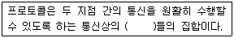
- 규약
- 링크
- 요소
- 기능
(정답률: 92%)
69. 어떤 지역에 200개의 기지국이 시설되어 운용 중에 있다고 가정한다면 1.8[GHz]대의 1FA당 트래픽 수용용량은? (단, 1FA당 트래픽 수용용량은 2,294이다.)
- 4,129
- 45,850
- 458,800
- 1,032,300
(정답률: 75%)
70. 통신시스템의 장애를 극복하기 위한 H/W redundancy 방안이 아닌 것은?
- duplex
- active/standby
- N-version program
- spare redundancy
(정답률: 75%)
71. 다음의 설명에 해당되는 프로토콜 요소는 어느 것인가?
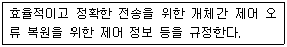
- 의미(semantics)
- 구문(syntax)
- 순서(timing)
- 연결(connection)
(정답률: 86%)
72. 무선통신시스템에서 전송용량이 10,000[bps]이고, 신호대잡음비(S/N)가 15일 때 필요한 대역폭은 몇 [Hz]인가?
- 2,000[Hz]
- 2,500[Hz]
- 3,000[Hz]
- 3,500[Hz]
(정답률: 76%)
73. 이동전화망에서 단말기가 한 셀에서 다른 셀로 이동할 때 통신하던 기지국과의 통신을 끊고 새로운 기지국과 통신을 시작하게 되는데, 이런 상황을 무엇이라고 하는가?
- 전력제어
- 핸드오프
- 페이딩 현상
- 도플러 현상
(정답률: 87%)
74. PCM에서 양자화시 계단의 크기(step size)를 작게하는 경우 양자화 잡음과 경사(구배)과부하 잡음은 각각 어떻게 되는가?
- 양자화 잡음과 경사(구배)과부하 잡음 모두 작아진다.
- 양자화 잡음과 경사(구배)과부하 잡음 모두 커진다.
- 양자화 잡음은 작아지고 경사(구배)과부하 잡음 모두 커진다.
- 양자화 잡음은 커지고 경사(구배)과부하 잡음 모두 작아진다.
(정답률: 58%)
75. WCDMA 채널 구조 중에서 무선인터페이스 프로토콜에 대한 설명이다. 다음 중 해당하는 은?
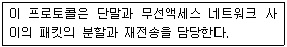
- RLC(Radio Local Control)
- RRC(Radio Radio Control)
- RLC(Radio Link Control)
- RRC(Radio Resource Control)
(정답률: 64%)
76. 다음 스펙트럼 확산(spread spectrum) 변조방식에 관한 설명 중 틀린 것은?
- 혼신, 방해, 페이딩 등에 강하다.
- 복조는 일반적으로 비동기 방식을 사용한다.
- 확산계수는 클수록 비화성이 우수하다.
- 확산된 신호를 전력밀도가 낮다.
(정답률: 59%)
77. 애드혹 네트워크(Ad-hoc Network)에 대한 설명이 옳은 것은?
- 네트워크의 구성 및 유지를 위한 기지국이 필요
- 독립형 네트워크를 구성할 수 없음
- 특정 호스트가 라우팅 기능 담당
- 네트워크 토폴로지가 동적으로 변함
(정답률: 57%)
78. 방송국의 공중선 전력이 5[kW]에서 20[kW]로 증가되면 전계가도는 몇 배가 되는가?
- 16 배
- 1/16 배
- 2 배
- 1/4 배
(정답률: 60%)
79. 중ㆍ장파 대역이 지표파에 의해 전파되는 과정에서 다음 중 어디에서 가장 감쇠가 많이 일어나는가?
- 강, 호수
- 바다
- 습지
- 사막
(정답률: 81%)
80. 다음 중 무선 LAN의 특징으로 적합하지 않은 것은?
- 복잡한 배선이 필요없다.
- 단말기의 재배치가 용이하다.
- 일반적으로 유선 LAN에 비하여 상대적으로 높은 전송속도를 낸다.
- 신호간섭이 발생할 수 있다.
(정답률: 80%)
5과목: 전자계산기 일반 및 무선설비기준
81. 마이크로프로세서의 시스템 버스에 해당하는 것끼리 올바르게 짝지어진 것은?
- 주소, 데이터, 메모리
- 제어, 데이터, 명령
- 데이터, 메모리, 제어
- 주소, 제어, 데이터
(정답률: 58%)
82. 무선설비의 공중선계에는 어떤 안전시설을 설치하여야 하는가?
- 절연체와 절연차폐체
- 절연저항 시험기
- 충전기구와 방전기구
- 낙뢰보호장치 및 접지시설
(정답률: 87%)
83. 주소지정방식 중 명령어 내에 오퍼랜드 필드의 내용이 데이터의 유효주소가 되는 주소지정방식은?
- 직접 주소지정방식
- 간접 주소지정방식
- 레지스터 주소지정방식
- 레지스터 간접 주소지정방식
(정답률: 69%)
84. 다음 중 무선국의 개설허가를 받고자 제출하는 허가 신청서에 첨부하여야 하는 서류는?
- 무선국의 운영 상태를 나타내는 재정관련 서류
- 무선설비의 주파수 대역별 주파수 이용 허가서류
- 무선설비의 공사설계서와 시설개요서
- 무선설비의 전파자원이용 중ㆍ장기 계획서
(정답률: 54%)
85. 중대한 전파 장해를 주거나 전자파로부터 정상적인 동작을 방해받을 정도의 영향을 받는 방송통신기자재 등에 대하여 인증하는 행위는
- 적합등록
- 적합인증
- 잠정인증
- 전자파적합인증
(정답률: 59%)
86. 다음 지문에서 설명하고 있는 운영체제의 종류는?
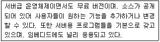
- 유닉스(Unix)
- 리눅스(Linux)
- 윈도우즈(Windows)
- 맥(Mac) O/S
(정답률: 90%)
87. 긴급통신ㆍ안전통신 또는 비상통신에 관한 의무를 이행하지 아니한 자에 대한 처분으로 가장 적합한 것은?
- 200만원 이하의 과태료
- 300만원 이하의 과태료
- 1년 이하의 징역 또는 500만원 이하의 벌금
- 3년 이하의 징역 또는 2,000만원 이하의 벌금
(정답률: 45%)
88. 준공검사를 받지 아니하고 운용할 수 있는 무선국이 아닌 것은?
- 50와트 미만의 무선설비를 시설하는 어선의 선박국
- 적합성 평가를 받은 무선기기를 사용하는 아마추어국
- 국가안보 또는 대통령 경호를 위하여 개설하는 무선국
- 공해 또는 극지역에 개설한 무선국
(정답률: 57%)
89. 16진수의 값 '12345678'을 기억장치에 저장하려고 한다. Little Endian 방식으로 저장된 것은 어느 것인가?
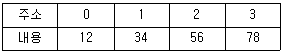
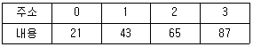
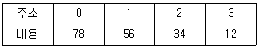
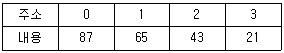
(정답률: 81%)
90. 무선통신업무를 종사하는 자는 몇 년마다 1회의 통신보안교육을 받아야 하는가?
- 2년
- 3년
- 4년
- 5년
(정답률: 73%)
91. 두 개의 레지스터에 십진수의 1과 -1에 해당하는 이진수가 저장되어 있다. 이 두 레지스터에 덧셈 연산을 수행한 결과는 다음의 어느 것인가?
- 결과 값은 0이고, 캐리(carry)가 발생하지 않는다.
- 결과 값은 0이고, 캐리가 발생한다.
- 오버플로우(overflow)와 캐리가 발생한다.
- 오버플로우는 발생하나 캐리는 발생하지 않는다.
(정답률: 69%)
92. DMA가 CPU에게 버스 사용권을 얻어 한 개의 워드를 전송하는 것을 무엇이라 하는가?
- 핸드세이킹(handshaking)
- 데이지체인(daisy chain)
- 버스 중재(bus arbitration)
- 사이클 스틸링(cycle stealing)
(정답률: 57%)
93. 다음 지문에서 설명하는 운영체제의 유형은?
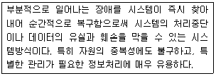
- 시분할 시스템(Time-sharing system)
- 다중 처리(Multi-processing)
- 다중 프로그래밍(Multi-programming)
- 결함 허용 시스템(Fault-tolerant system)
(정답률: 75%)
94. 시프트 레지스터(shift register)의 내용을 오른쪽으로 2비트 이동시키면 원래 저장되었던 값은 어떻게 변화되는가?
- 원래 값의 2배
- 원래 값의 4배
- 원래 값의 1/2배
- 원래 값의 1/4배
(정답률: 60%)
95. 다음 지문이 의미하는 소프트웨어는 무엇인가?
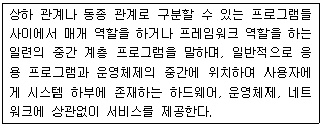
- 유틸리티
- 디바이스 드라이버
- 응용소프트웨어
- 미들웨어
(정답률: 80%)
96. “방송통신위원회는 「외기권에 발사된 물체의 등록에 관한 협약」에 따라 대한민국 국민이 인공위성을 ( )에 등록하여야 한다.” 괄호에 들어갈 말은?
- INTELSAT
- 국제연합
- 국제방송통신연합
- 국제인공위성협회
(정답률: 62%)
97. 두 이진수 01101101과 11100110을 연산하여 결과가 10011011이 나왔다. 다음의 어떤 연산을 한 것인가?
- AND 연산
- OR 연산
- XOR 연산
- NAND 연산
(정답률: 80%)
98. R3E, H3E, J3E 전파형식을 사용하는 모든 무선국의 무선설비 점유주파수대폭의 허용치로 맞는 것을 고르시오.
- 1[kHz]
- 3[kHz]
- 6[kHz]
- 10[kHz]
(정답률: 88%)
99. 다음 중 필요주파수대폭 202[MHz]를 바르게 표시한 것은?
- M202
- 2M02
- 202M
- 20M2
(정답률: 77%)
100. 무선국 정기검사의 유효기간에 대한 설명이다. 맞지 않는 것은?
- 실험국 : 1년
- 총톤수 40톤인 어선의 의무선박국 : 2년
- 기지국 : 5년
- 육상이동국 : 5년
(정답률: 62%)
f = 1 / (2π√(LC))
여기서 C1, C2가 C3에 비해 매우 크다고 했으므로, C1과 C2는 전체 용량의 대부분을 차지하게 된다. 따라서 C1과 C2를 무시하고 C3만 고려하면, 발진주파수는 다음과 같이 근사할 수 있다.
f ≈ 1 / (2π√(C3L))
여기에 C3=0.001[μF], L=1[mH]를 대입하면,
f ≈ 1 / (2π√(0.001 × 0.001))
f ≈ 159[kHz]
따라서 정답은 "약 159[kHz]"이다.